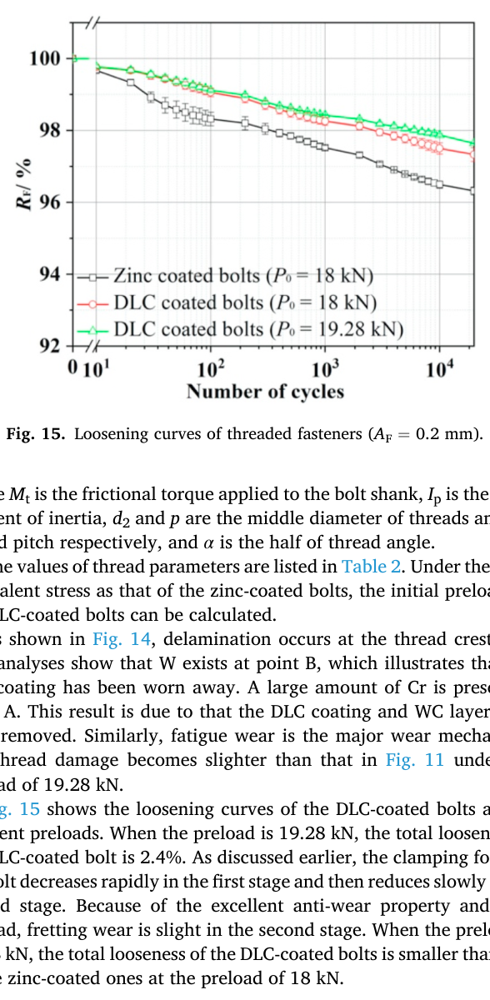
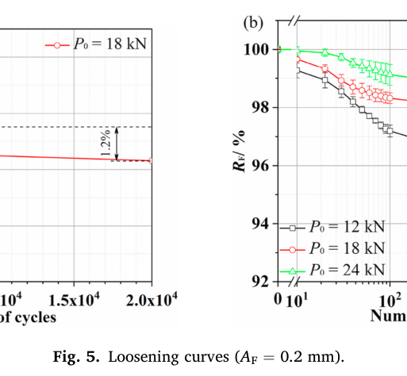
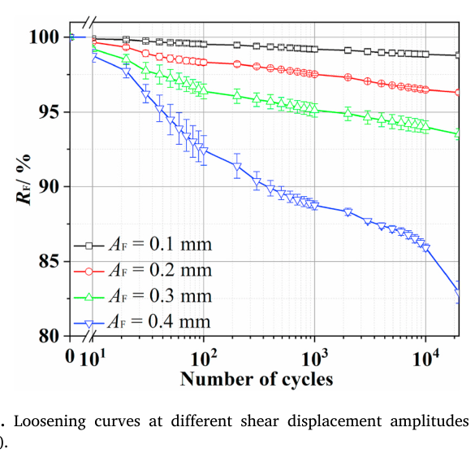

Liu 2020 Wear — estudo de caso— case study
Figura do artigoPaper figure



Figura(s) originais do artigo (recorte do PDF) — a fonte dos pontos que foram digitalizados.Original figure(s) from the paper (PDF crop) — the source of the digitized points.
Condições do ensaioTest conditions
| ReferênciaReference | Liu, Mi, Hu, Long, Cai, Peng & Zhu (2020). Wear 460-461:203453 · doi:10.1016/j.wear.2020.203453 |
| ParafusoBolt | M12x1.75 |
| Pré-carga F0Preload F0 | 12–24 kN |
| AmplitudeAmplitude | ±0.10–0.40 mm |
| FrequênciaFrequency | 5 Hz |
| Família / nº de curvasFamily / curves | transverse · 9 |
| MAE medianomedian | 0.013 |
Informações do artigo — aparato, corpo-de-prova, matriz de ensaiosPaper information — apparatus, specimen, test matrix
Liu, Mi, Hu, Long, Cai, Peng & Zhu (2020) — Loosening Behaviour of Threaded Fasteners Under Cyclic Shear Displacement
Citation
Liu, J., Mi, X., Hu, H., Long, L., Cai, Z., Peng, J., Zhu, M. (2020). "Loosening behaviour of threaded fasteners under cyclic shear displacement." *Wear* 460-461, 203453. DOI: 10.1016/j.wear.2020.203453. Received 19 Mar 2020 / revised 23 Jun 2020 / accepted 19 Aug 2020 / online 27 Aug 2020. Affiliations: Southwest Jiaotong University (Chengdu), State Key Lab of Long-life High Temperature Materials / Dong Fang Turbine Co. (Deyang), Nuclear Power Institute of China (Chengdu).
Target limitation: L1 + L6 + why
L1 = thread wear vs preload & amplitude drives loosening. L6 = coated-pair wear contrast (zinc vs DLC). This paper is a direct, purpose-built, single-mechanism isolation experiment for both: one rig, one bolt size (M12), one loading mode (pure cyclic transverse/shear displacement, no bending), sweeping preload alone (12/18/24 kN at fixed amplitude) and amplitude alone (0.1/0.2/0.3/0.4 mm at fixed preload) against the SAME zinc-coated baseline, then swapping to a DLC coating at matched (and equivalent-stress-corrected) preload. It is one of the cleanest available sources to answer BAS V2's own framing question "does d(loosening)/d(amplitude) ≠ 0?" with an unconfounded, quantified answer, and separately supplies L6's coated-pair contrast (friction + wear-resistance) as matched-rig, matched-geometry data (same M12×1.75 bolt, same first-thread wear characterization method, only the coating changes).
What it is
Pure experiment (no FE/analytical model). A cyclic-shear-displacement rig (Fig. 1) drives an M12 bolted lap joint through repeated transverse displacement while continuously monitoring the residual clamping (preload) force. After each test, the first thread is examined by SEM + EDX to characterize the wear mechanism and (for zinc bolts) whether the zinc coating has been worn through to bare steel.
Apparatus
- Rig: lower plate fixed to the testing platform; a load cell (WTP
218-50, 50 kN capacity, 0.5 kN accuracy) sits between a thin washer and the lower plate to continuously monitor clamping force. Six rollers between the two plates minimize the friction contribution of the plate-to-plate interface itself (isolating the bolted-joint loosening mechanism from rig-frame friction). The upper plate is gripped by a servo-hydraulic fatigue machine (Shimadzu EHF-UM100K2-040-OA) which applies the cyclic shear displacement to the upper plate; shear load and displacement are read from the testing machine's own two sensors.
- Control mode: displacement-controlled (the machine imposes a cyclic
shear displacement amplitude A_F; load is the dependent/measured variable) — maps directly to BAS V2's delta_amp disp-mode (step_cycle(..., delta_amp=...)), NOT force-controlled mode.
- Preload application: torque wrench (static, pre-test); no torque control
during cycling.
- Frequency: 5 Hz, fixed across the whole study (not swept).
- Repetition: each parameter combination run 3 times (error bars in
Figs. 5/9/13/15 are inter-replicate scatter, not measurement noise within one test).
- Cycle count:
N = 2×10^4for every test (fixed; not a sweep variable).
Materials
- Bolt/nut: M12 × 1.75 mm, 1045 steel, yield strength 355 MPa, effective
(stress) area 84.3 mm². Chemical composition of 1045 steel (wt%): Fe balance, C 0.45, Si 0.27, Mn 0.65, Ni 0.25, Cr 0.25, Mo 0.45, P ≤0.04, S ≤0.04.
- Thread geometry (Table 2, directly usable for V2 thread-contact
geometry inputs): minor diameter d1 = 10.106 mm, pitch diameter d2 = 10.863 mm, pitch p = 1.750 mm, half thread angle α = 30°.
- Zinc coating (baseline): standard commercial zinc plating on the
1045-steel bolts; thickness not stated.
- DLC coating (L6 contrast): plasma-enhanced CVD, with a **Cr adhesion
layer (0.1 µm) + WC transition layer (0.5 µm) + DLC top layer (≈1.8 µm) — DLC cannot bond directly to Fe/steel, hence the two-layer buffer stack. Deposition: Cr+WC at 150 °C / 6×10⁻³ Pa / −200 V bias / 7 kW, 15+40 min; DLC at C₂H₂ pressure 5×10⁻¹ Pa / −800 V bias / 180 °C / 120 min. Characterization: Raman I_D/I_G = 0.97 (sp3/sp2 ratio, fairly hard/DLC-like character); nanoindentation elastic modulus 194 GPa, hardness 25 GPa**.
- **Thread friction coefficients (Table 2, DIRECT provenance for V2
mu_thread per coating): zinc-coated μt = 0.150; DLC-coated μt = 0.126** (16% relative reduction).
Test matrix
| Sweep | Coating | P0 (initial preload) | A_F (shear disp. amplitude) | Freq | N | Reps | Figure |
|---|---|---|---|---|---|---|---|
| Preload | Zinc | 12, 18, 24 kN | 0.2 mm (fixed) | 5 Hz | 2×10⁴ | 3 | Fig. 5 |
| Amplitude | Zinc | 18 kN (fixed) | 0.1, 0.2, 0.3, 0.4 mm | 5 Hz | 2×10⁴ | 3 | Fig. 9 |
| Coating (matched nominal P0) | Zinc vs DLC | 18 kN (both) | 0.2 mm | 5 Hz | 2×10⁴ | 3 | Fig. 13 |
| Coating (equiv.-stress-matched P0) | Zinc(18) vs DLC(18) vs DLC(19.28) | 18 / 18 / 19.28 kN | 0.2 mm | 5 Hz | 2×10⁴ | 3 | Fig. 15 |
Preload selection rationale (§2.1): Handbook of Mechanical Design puts tensile stress from preload at 50-70% of yield ⇒ 14.96-20.95 kN "recommended" window for this bolt; the study deliberately brackets it with 12 kN (below) and 24 kN (above) plus the 18 kN mid-point, so the preload sweep spans just outside the nominally-recommended band on both sides.
Equivalent-stress-matched DLC preload (19.28 kN, §3.2.2): because DLC's lower μt reduces the frictional-torque shear-stress component τt for a given tightening torque, the authors solve σe = sqrt(σa² + 3·τt²) (Eqs. 1-3, using Table 2's d1,d2,p,α) for the DLC preload that reproduces the SAME σe (hence same equivalent thread-root stress) as the zinc bolt at 18 kN. This gives 19.28 kN — i.e. DLC's lower thread friction "buys back" ~7% more usable preload at matched equivalent stress. This is a clean, transferable FORM (σe(P0,μt) relation, Eqs. 1-3) even though the specific 19.28 kN number is per-thread-geometry.
KEY RESULTS — quantified amplitude/preload/coating scaling
All "final looseness" values below = 100% − R_F read from the digitized curves at the last common cycle read (~1.9×10⁴, just short of the paper's N=2×10⁴ endpoint — see Caveats for the ~1 percentage-point systematic offset vs. the paper's own quoted "total looseness" numbers).
Two-stage shape (Fig. 5a, P0=18 kN, A_F=0.2 mm, confirmed by explicit figure annotation): stage I (plastic deformation of the first 3 thread roots + asperities) drops clamping force 2.5% from a ~99% post-seating plateau to ~96.5% over the first ~1000 cycles ("about two-thirds of total looseness," matches 2.5/3.7≈0.68); stage II (fretting wear) drops a further 1.2% from 96.5% to ~95.3% over cycles 1000→2×10⁴. There is ALSO a very fast (<~50-100 cycle) initial micro-drop from the true 100% (N=0) down to the ~99% plateau that the figure's own annotation brackets do not number separately (see Caveats) — i.e. the paper's own "2.5%+1.2%=3.7%" is itself a partial total (excludes that first micro-transient).
Amplitude scaling (Fig. 9, zinc, P0=18 kN fixed, ~1.9×10⁴ cycles) — THE key-question figure, curves fully separated, no overlap ambiguity:
| A_F (mm) | Final R_F (%) | Final looseness (%) |
|---|---|---|
| 0.1 | 98.80 | 1.20 |
| 0.2 | 96.33 | 3.67 |
| 0.3 | 93.35 | 6.65 |
| 0.4 | 83.11 | 16.89 |
d(looseness)/d(amplitude) is strongly non-zero, monotonic, and super-linear: log-log local slope ≈ 1.6 (0.1→0.2 mm) and 1.5 (0.2→0.3 mm) — looseness scales roughly as A_F^1.5 in this "normal fretting-wear" regime — then jumps to slope ≈3.2 for 0.3→0.4 mm, a distinct regime change the paper attributes explicitly to fatigue crack initiation at the thread root after ~10⁴ cycles at the highest amplitude ("the clamping force drops quickly" once the crack initiates, §3.1.2). A 4× amplitude increase (0.1→0.4mm) gives a ~14× increase in final looseness — amplitude is a far stronger lever than preload in this dataset (see below).
Preload scaling (Fig. 5b, zinc, A_F=0.2 mm fixed, ~1.9×10⁴ cycles):
| P0 (kN) | Final R_F (%) | Final looseness (%) |
|---|---|---|
| 12 | 93.84 | 6.16 |
| 18 | 95.42 | 4.58 |
| 24 | 96.85 | 3.15 |
d(looseness)/d(preload) is negative and monotonic but much milder: log-log local slope ≈ −0.7 (12→18 kN) to −1.3 (18→24 kN) — a 2× preload increase (12→24 kN) roughly halves final looseness (6.16%→3.15%), versus amplitude's ~14× swing over the same 2×-ish dynamic range extended to 4×. Preload and amplitude both matter, but amplitude dominates — direct, quantified support for BAS V2's two-factor (Φ×helix) framing that treats transverse-slip amplitude as a first-order driver, not a secondary one.
Coating contrast (Fig. 13 & 15, matched conditions, ~1.9×10⁴ cycles):
| Condition | Final R_F (%) | Final looseness (%) |
|---|---|---|
| Zinc, P0=18 kN | 95.42–95.44 (Fig.5b/13, cross-checked) | 4.56–4.58 |
| DLC, P0=18 kN | 96.42 (Fig. 15) | 3.58 |
| DLC, P0=19.28 kN (equiv.-stress) | 96.66 (Fig. 15) | 3.34 |
DLC at matched 18 kN reduces final looseness by ~22% relative to zinc (paper's own text states "27%," measured nearer the true N=2×10⁴ endpoint and possibly on the pre-micro-transient partial basis — see Caveats; both agree on DLC materially reduces loosening at equal nominal preload). Raising DLC's preload to the equivalent-stress-matched 19.28 kN gives a further small reduction (3.58%→3.34%, ~7%), matching the paper's own stated 2.6%→2.4% (~8%) — i.e. DLC's benefit is a combination of lower friction (μt 0.126 vs 0.150, allows higher usable preload) and higher wear resistance (harder, lower-friction contact reduces fretting-driven preload loss at any fixed preload).
Nuances — first-thread wear mechanisms (SEM+EDX, qualitative)
- **Fatigue wear is the dominant mechanism on the first thread surface in
every condition tested (zinc and DLC alike), consistently accompanied by adhesive wear and abrasive** (ploughing/plastic-flow) features; delamination and spalling pits are the characteristic damage morphologies. This is a 3-mechanism mix, not a pure-Archard/adhesive picture.
- Zinc coating removal tracks slip severity, not contact pressure: at
P0=12 kN (low preload → more relative slip) the coating at the damage site is fully worn through to bare Fe (EDX: only Fe+O, no Zn); at P0=24 kN (high preload → less slip) the coating survives (EDX: strong Zn signal) despite the higher normal contact stress — consistent with fretting-wear removal being driven by cumulative relative slip (∝ amplitude × cycles), not by normal pressure per se. Symmetric pattern on the amplitude sweep: at A_F=0.1mm zinc mostly survives; by A_F=0.3-0.4mm "most of the zinc coating has been removed."
- Thread root vs crest damage location differs by coating: zinc-coated
bolts show damage concentrated with a root-vs-crest gradient (root slightly less damaged than crest per the P0=18kN EDX); DLC-coated bolts show damage occurring primarily near the thread crest, with WC transition-layer exposure (W+Cr in EDX) marking full through-wear of the DLC top layer at the damage site, while carbon-rich (still-DLC-covered) regions nearby remain only lightly fretted.
- Higher preload reduces DLC thread damage too (Fig. 14 at P0=19.28 kN
visibly slighter than Fig. 12 at P0=18 kN) — the preload-reduces-wear trend is coating-independent, only the absolute severity differs.
Conclusions (paper's own, §4)
1. Loosening is a two-stage process: stage I = fast clamping-force drop (plastic deformation of the jointed structure) over the first ~10³ cycles; stage II = slow drop (fretting wear between contact threads) from 10³ to 2×10⁴ cycles. 2. Zinc-bolt thread damage and bolt looseness both decrease with increasing preload and decreasing amplitude; first-thread wear mechanism = fatigue, with adhesive + abrasive contributions. 3. DLC's excellent wear resistance keeps fretting wear slight and looseness small; fatigue remains the major wear mechanism even for DLC. 4. At matched equivalent thread-root stress, DLC's preload can be raised (lower μt "buys back" preload), further reducing fretting wear and improving anti-loosening performance beyond the matched-nominal-preload comparison alone.
Curve inventory
Source figures: figures/liu2020_fig5_native.jpeg (panels a=linear P0=18kN detail, b=log-x 3-preload comparison), liu2020_fig9_crop.png (log-x, 4-amplitude comparison), liu2020_fig13_native.jpeg (log-x, zinc-vs-DLC @ 18kN), liu2020_fig15_native.jpeg (log-x, zinc@18 + DLC@18 + DLC@19.28, extends to ~2×10⁴). All plots: y = R_F = residual-clamping-force ratio [%] (100 × F/F0); x = number of cycles N [-], log scale for panel-b-style figures (with a broken/non-log "0" origin point), linear for Fig. 5a.
| File | Source fig. | Condition | x [unit] | y [unit] | #pts |
|---|---|---|---|---|---|
liu2020_fig5b_zinc_P0-12kN_AF0.2mm.csv | Fig. 5b | Zinc, P0=12kN, A_F=0.2mm | N [cycles] | R_F [%] | 22 |
liu2020_fig5b_zinc_P0-18kN_AF0.2mm.csv | Fig. 5b | Zinc, P0=18kN, A_F=0.2mm | N [cycles] | R_F [%] | 22 |
liu2020_fig5b_zinc_P0-24kN_AF0.2mm.csv | Fig. 5b | Zinc, P0=24kN, A_F=0.2mm | N [cycles] | R_F [%] | 22 |
liu2020_fig9_zinc_AF0.1mm_P0-18kN.csv | Fig. 9 | Zinc, P0=18kN, A_F=0.1mm | N [cycles] | R_F [%] | 23 |
liu2020_fig9_zinc_AF0.2mm_P0-18kN.csv | Fig. 9 | Zinc, P0=18kN, A_F=0.2mm | N [cycles] | R_F [%] | 23 |
liu2020_fig9_zinc_AF0.3mm_P0-18kN.csv | Fig. 9 | Zinc, P0=18kN, A_F=0.3mm | N [cycles] | R_F [%] | 23 |
liu2020_fig9_zinc_AF0.4mm_P0-18kN.csv | Fig. 9 | Zinc, P0=18kN, A_F=0.4mm | N [cycles] | R_F [%] | 23 |
liu2020_fig15_DLC_P0-18kN_AF0.2mm.csv | Fig. 15 | DLC, P0=18kN, A_F=0.2mm | N [cycles] | R_F [%] | 23 |
liu2020_fig15_DLC_P0-19.28kN_AF0.2mm.csv | Fig. 15 | DLC, P0=19.28kN, A_F=0.2mm | N [cycles] | R_F [%] | 23 |
All 9 CSVs use header x,y and start with the definitional anchor 0,100.0 (R_F≡100% at N=0 by construction). Fig. 13's zinc/DLC@18kN curves were independently re-digitized as a cross-check (not saved as separate CSVs — they duplicate Fig. 5b's zinc-18kN and Fig. 15's DLC-18kN within ~0.1-0.3 percentage points at every cross-checked cycle count, confirming both the pixel-calibration methodology and the absence of gross reading errors). Fig. 9's own A_F=0.2mm/P0=18kN curve is likewise the same physical condition as the Fig. 5b/13/15 "zinc-18kN" curves, kept as its own file for internal self-consistency of the 4-curve amplitude sweep (all traced from the same image/calibration pass).
Not digitized (no numeric wear-vs-parameter curve exists in the paper — wear/damage is characterized only qualitatively via SEM+EDX images, described in prose above): Figs. 2,3,4,6,7,8,12,14 (SEM/EDX montages, no plotted curve); Fig. 10 (Raman spectrum, characterization only, not loosening-related); Fig. 11 (DLC nanoindentation load-displacement + cross-section SEM — scalar results, modulus=194 GPa/hardness=25 GPa/thickness≈1.8 µm, already transcribed above; redigitizing the loop adds no information for L1/L6).
V2 mapping
- L1 — direct amplitude/preload wear-driven loosening confirmation: this
is exactly BAS V2's transverse WearLoss regime (displacement-controlled, delta_amp disp-mode) with the confound-free amplitude sweep V2's own roadmap calls for. The measured super-linear amplitude scaling (looseness ∝ A_F^~1.5, steepening to ~3.2 near a fatigue-crack transition) is calibration/validation-grade evidence that d(loosening)/d(amplitude) ≠ 0 and is NOT a weak/secondary effect — directly answers this round's key question. Note this is an F/F0-loss exponent, not a raw wear-depth exponent — an Archard-linear wear DEPTH (∝ slip amplitude, V2's current WearLoss form) can still produce a super-linear apparent F/F0-loss curve once thread-flank engagement / embedding / damage-amplification couplings are folded in, so this dataset constrains the overall system response, not k_wear_spec in isolation.
- **The A_F=0.4mm fatigue-crack regime is a candidate falsification/
extension case for V2's FatigueLoss cliff mechanism (merged 2026-07-08 per fatigue-tail-form-outcome): a thread-root fatigue crack initiating at N≈10⁴ cycles under high-amplitude transverse cycling and then accelerating preload loss is structurally the same phenomenon as the axial Li2022ti cliff that mechanism was built for — this is a transverse** instance of the same physics, a good cross-check candidate for whether the cliff form transfers from axial to transverse loading.
- L6 — DLC coated-pair provenance: Table 2's
μt=0.126 (DLC) vs 0.150
(zinc) is a direct, quotable provenance pair for a per-coating mu_thread preset (16% relative reduction, matched rig/geometry/method — exactly the kind of "read, don't fit" constant the project's provenance discipline (calibration/provenance.py, §4.42c hazard notes) wants). The ~22-27% total-looseness reduction and higher wear resistance at equal nominal preload is consistent with a lower k_wear_spec for the DLC pair (harder, 25 GPa vs typical steel-on-steel), but the paper gives no absolute wear volume/depth — a k_wear_spec value for "DLC-on-1045-steel" would have to come from an inverse fit against these F/F0 curves (with mu_thread fixed at 0.126 from Table 2), not a direct read; flag as Fase-2-style "procedência pendente" if a DLC joint profile is ever built.
- Equivalent-stress preload correction (Eqs. 1-3, §3.2.2) is a clean,
transferable, fully analytical FORM (σe=√(σa²+3τt²), σa=4P0/(πd1²), τt=8P0(d2/cosα·μt+p/π)/(πd1³)) for "how much extra preload does a lower-µ coating buy back at matched thread-root stress" — could be used directly if V2 ever needs a torque-tension/equivalent-stress cross-check independent of the F/F0 loosening curves themselves.
- **Two-stage shape + explicit stage-I/stage-II cycle-count split (first
~10³ cycles = stage I, 10³→2×10⁴ = stage II)** is one more confirming data point for V2's StageSegmentation boundaries (n_I≈10³, matches the project's existing 3-stage Junker-shape framing) on a transverse displacement-controlled M12 rig distinct from the UFU M16 rig already calibrated against.
Caveats
- Digitization method: pixel color-tracing (PIL/numpy) on the native
embedded raster images (figures/liu2020_fig{5,9,13,15}_native.jpeg / _crop.png), NOT WebPlotDigitizer or similar — axis calibration was derived from measured tick-mark pixel spacing (validated against the in-figure "2.5%"/"1.2%" annotation brackets in Fig. 5a, which matched a corrected calibration to within <0.1 percentage points) and cross-checked by overlaying computed gridlines on zoomed crops. Curves were traced right-to-left with continuity-tracking (closest-band-to-previous-column) from an anchor at the flat, well-separated tail — this was necessary because Fig. 5a's first ~200-300 cycles have so many densely overlapping open-circle markers (dozens of points within a ~15-pixel-wide column range) that per-column color masks alone cannot isolate individual points there; Figs. 9/13/15's log-x layout avoids this problem (log scale naturally spreads out the early, fast-changing cycles).
- **Systematic ~1-percentage-point offset vs. the paper's own quoted "total
looseness" numbers** (its 3.7%/2.6%/2.4% for zinc-18kN/DLC-18kN/ DLC-19.28kN): the paper's own annotated brackets (Fig. 5a's "2.5%"+"1.2%") measure from a ~99% POST-initial-micro-transient plateau, not from the true N=0/100% anchor every CSV here uses — there is a fast (<~50-100 cycle) micro-drop from 100%→~99% that is real (visible in the source figure, and needed to make a physically well-posed N=0 anchor for any cycle-by-cycle model) but is not separately numbered by the authors. All "final looseness" figures quoted above in KEY RESULTS are measured from the true N=0 anchor and are therefore ~0.7-1.0 percentage points HIGHER than the paper's own prose numbers for the same curves — not a digitization error, a different reference point. Confirmed self-consistent: the offset is nearly identical (≈1.0 pt) across the zinc and both DLC curves.
- **Last digitized cycle (~1.9×10⁴) is slightly short of the paper's N=2×10⁴
endpoint** (pixel readout right at the box edge is unreliable/clips) — the curves are still very slowly decreasing there, so true N=2×10⁴ values would be a further ~0.05-0.15 percentage points lower than shown; not re-extrapolated (the last few CSV rows already sit within ~500-1000 cycles of the true endpoint).
- **Fig. 5b's y-axis pixel scale (54.9 px/unit) differs slightly from Fig.
5a/9/13/15's (~36.8-64.5 px/unit, each image-specific)** — every figure's calibration was derived independently from that image's own measured tick spacing (never assumed to match another figure/panel), and cross-validated where the same physical curve appears in >1 figure (zinc-18kN: Fig.5b vs Fig.13 vs Fig.15 all agree within ~0.1-0.3 points; see Curve inventory).
- Typical point-to-point digitization noise ≈ ±0.1-0.3 percentage points,
occasionally up to ~0.3-0.4 near error-bar caps (the source figures all show inter-replicate error bars, which can locally perturb the automated continuity-trace by one bar-cap width); a handful of individual points show mild (~0.1-0.2 pt) local non-monotonicity consistent with this noise floor rather than a real physical reversal — treat point-to-point wiggles smaller than ~0.3 points as digitization noise, not signal.
- No numeric wear-depth/volume-vs-parameter data exists in this paper —
all wear characterization is qualitative (SEM+EDX images + prose). The R_F (preload-retention) curves are the only quantitative proxy for cumulative wear/loosening severity.
- **A_F=0.4mm's late-curve acceleration is fatigue-crack-driven per the
paper's own text**, not a pure-wear phenomenon — treat this one curve's post-10⁴-cycle portion as a different regime/mechanism than the other three amplitude curves' entirely-wear-driven behavior.
Modelo vs dadoModel vs data
Cada card = uma curva digitalizada deste estudo: a linha é a previsão do modelo (config adotada, do store canônico) e os pontos são o dado medido; o badge traz o MAE.Each card = one digitized curve from this study: the line is the model prediction (adopted config, from the canonical store) and the dots are the measured data; the badge shows the MAE.
ReprodutibilidadeReproducibility
Cada card tem ↓ CSV (modelo + dado da curva). Os CSVs digitalizados originais ficam em Models/CALIBRATION_AND_VALIDATION/curve_library/digitized_csv/; a curva do modelo vem do store canônico (config adotada por fonte). Para reproduzir localmente:Each card has ↓ CSV (curve model + data). The original digitized CSVs live in Models/CALIBRATION_AND_VALIDATION/curve_library/digitized_csv/; the model curve comes from the canonical store (adopted per-source config). To reproduce locally:
Ver também o guia de uso do programa e a metodologia.See also the program usage guide and the methodology.